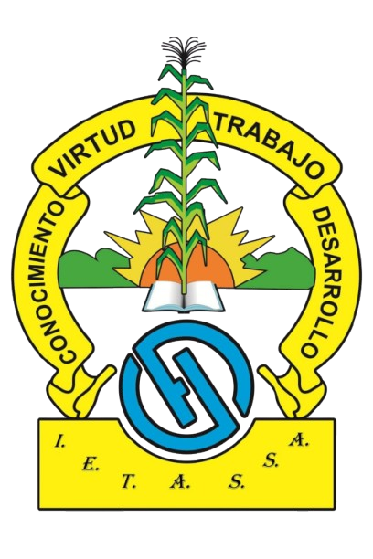
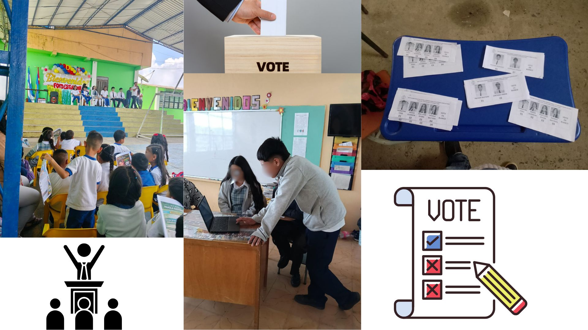
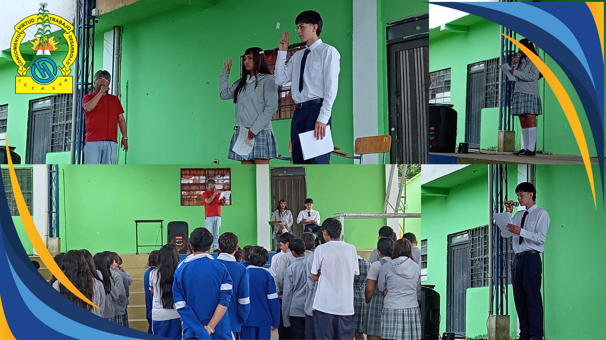

Samaniego - Nariño | ietassa.edu.co

Elecciones estudiantiles fortalecieron el liderazgo...
La Institución Educativa vivió una significativa jornada de participación durante las elecciones estudiantiles, fortaleciendo los valores democráticos, el liderazgo y el sentido de pertenencia. En un ambiente de respeto, compromiso y entusiasmo, la comunidad estudiantil ejerció su derecho al voto para elegir a sus representantes, evidenciando el interés por construir una institución más participativa e incluyente.
Como resultado de esta fiesta democrática, fueron elegidos como representantes para el presente periodo académico:
Personero: Emer Santiago Urbina Ordoñez
Contralora: Liseth Pahola Bastidas Guerra
La institución felicita a los estudiantes elegidos y les desea muchos éxitos en el desarrollo de sus funciones, confiando en su capacidad de liderazgo, responsabilidad y compromiso con el bienestar de toda la comunidad educativa. Así mismo, se reconoce la participación activa de todos los estudiantes, docentes y directivos que hicieron posible el desarrollo de esta jornada democrática.

“Compromiso y liderazgo: así fue la posesión del personero y la contralora estudiantil”….
Posesión y juramento de los representantes estudiantiles: liderazgo que inspira a nuestra comunidad educativa
En un ambiente de respeto, compromiso y participación democrática, el día de ayer se llevó a cabo la posesión y toma de juramento del personero estudiantil y la contralora de la Institución Educativa Técnica Agropecuaria y de Sistemas “Simón Álvarez”.
Durante este importante acto institucional, se formalizó la elección de los estudiantes que asumirán la responsabilidad de representar y velar por los intereses de la comunidad estudiantil, fortaleciendo así los valores de la democracia, el liderazgo y la participación activa dentro de la institución.
El evento contó con la presencia de directivos, docentes y estudiantes, quienes acompañaron este significativo momento en el que los representantes electos asumieron su compromiso con responsabilidad, ética y sentido de pertenencia.
Los estudiantes posesionados fueron:
Personero: Emer Santiago Urbina Ordoñez
Contralora: Liseth Pahola Bastidas Guerra
La institución felicita a los nuevos líderes estudiantiles y les desea éxitos en el desarrollo de sus funciones, confiando en su capacidad para promover el bienestar, la convivencia y la participación de todos los estudiantes.
De igual manera, se resalta la importancia de estos espacios democráticos que permiten formar ciudadanos íntegros, críticos y comprometidos con su entorno.